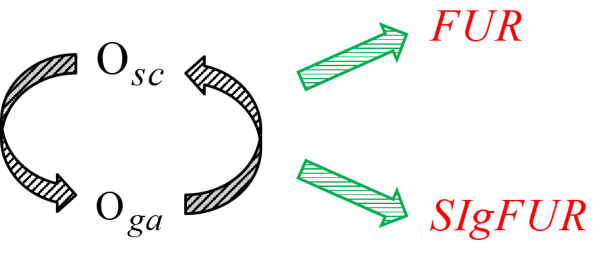

Hannah Parker, parkerhannah09@gmail.com
Rakhi Singh, agrakhi@gmail.com
Prakash Singh Badal, aprakashn@gmail.com
Rank aggregation problem is useful to practitioners in political science, computer science, social science, medical science, and allied fields. The objective is to identify a consensus ranking of n objects that best fits independent rankings given by k different judges. Under the Kemeny framework, a distance metric called Kemeny distance is minimized to obtain consensus ranking. The problem is of the n! order and quickly becomes infeasible. To address the problem, two heuristics-based algorithms — FUR and SIgFUR — are developed in the current package, RankAggSIgFUR (pronounced as rank-agg-cipher). The proposed algorithms are polynomially bounded algorithms to aggregate complete rankings under Kemeny’s axiomatic framework. These algorithms in turn depend on newly developed basic algorithms, Subiterative Convergence and Greedy Algorithm. The results are generally superior to existing algorithms in terms of both performance (Kemeny distance) and run-time. Even for large number of objects, the proposed algorithms run in few minutes. Please see Badal and Das (2018). for more details.
Development status
This package is live on CRAN. The programs are in stable development phase. Any major changes for complete rankings is unlikely at this time. New additions to include tied or incomplete rankings may be added over time.
Installation
Most stable version pushed to CRAN can be installed directly from CRAN:
install.packages("RankAggSIgFUR")The latest version of the package under development can be installed from GitHub:
install.packages("devtools")
library(devtools)
remotes::install_github("prakashvs613/RankAggSIgFUR")Bug reports
Please submit any bugs or issues (or suggestions) using the issues tab of the repo.
Usage
The main functions users will use are fur and sigfur. These are heuristics-based algorithm to find consensus rankings. The outcomes are returned as consensus ranking (in terms of ordering), total Kemeny distance of the consensus ranking, and extended correlation coefficient as defined by Emond and Mason (2002).
library(RankAggSIgFUR)
# One subiteration length
input_rkgs <- matrix(c(3, 2, 5, 4, 1, 2, 3, 1, 5, 4, 5, 1, 3, 4, 2, 1, 2, 4, 5, 3),
byrow = FALSE, ncol = 4)
subit_len_list <- 2
search_radius <- 1
fur(input_rkgs, subit_len_list, search_radius) # Determined the consensus ranking, total Kemeny
# distance, and average tau correlation coefficient
# Multiple subiteration lengths
input_rkgs <- matrix(c(3, 2, 5, 4, 1, 2, 3, 1, 5, 4, 5, 1, 3, 4, 2, 1, 2, 4, 5, 3),
byrow = FALSE, ncol = 4)
subit_len_list <- c(2,3)
search_radius <- 1
fur(input_rkgs, subit_len_list, search_radius)
# Included dataset of 15 input rankings of 50 objects
data(data50x15)
input_rkgs <- as.matrix(data50x15[, -1])
subit_len_list <- c(2, 3)
search_radius <- 1
fur(input_rkgs, subit_len_list, search_radius)
## Four input rankings of five objects
input_rkgs <- matrix(c(3, 2, 5, 4, 1, 2, 3, 1, 5, 4, 5, 1, 3, 4, 2, 1, 2, 4, 5, 3),
byrow = FALSE, ncol = 4)
subit_len_list_sbi <- c(2:3)
omega_sbi <- 10
subit_len_list_fur <- c(2:3)
search_radius <- 1
sigfur(input_rkgs, subit_len_list_sbi, omega_sbi, subit_len_list_fur, search_radius) # Determined the consensus ranking,
# total Kemeny distance, and average tau correlation coefficient
# Included dataset of 15 input rankings of 50 objects
data(data50x15)
input_rkgs <- as.matrix(data50x15[, -1])
subit_len_list_sbi <- c(3)
omega_sbi <- 5
subit_len_list_fur <- c(2:3)
search_radius <- 1
sigfur(input_rkgs, subit_len_list_sbi, omega_sbi, subit_len_list_fur, search_radius)Check out the vignettes for more examples and details.
License
This package is released in the public domain under the General Public License GPL.
References
Badal PS, Das A (2018). “Efficient algorithms using subiterative convergence for Kemeny ranking problem.” Computers & Operations Research, 98, 198-210. doi: 10.1016/j.cor.2018.06.007.
Emond EJ, Mason DW (2002). “A new rank correlation coefficient with application to the consensus ranking problem.” Journal of Multi-Criteria Decision, 11(1), 17-28. doi: 10.1002/mcda.313.